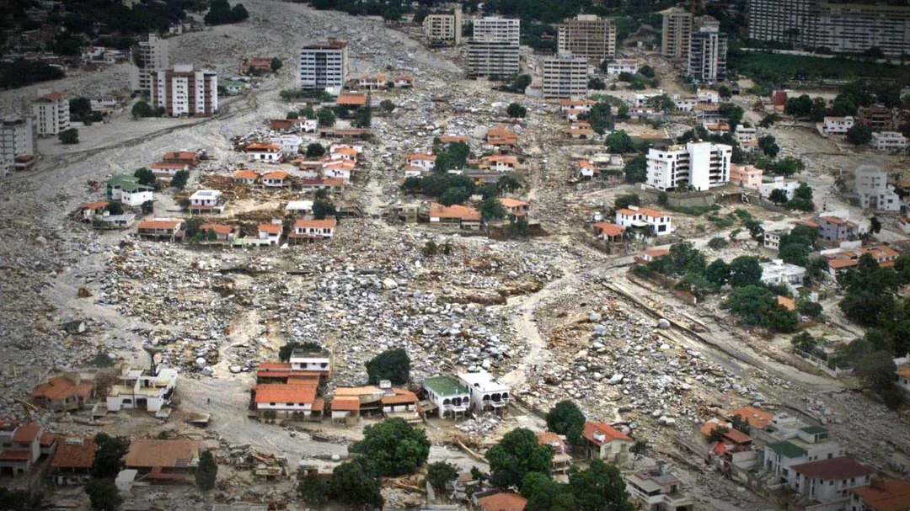
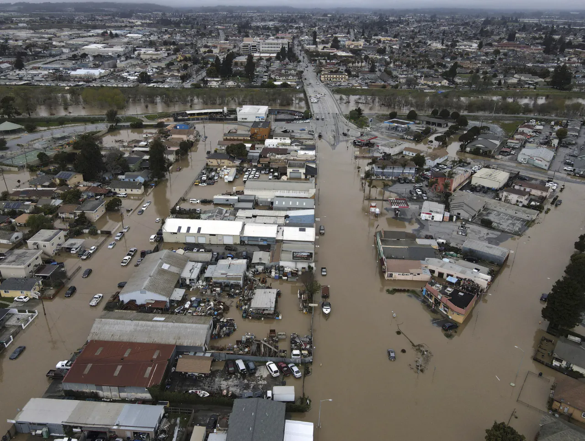
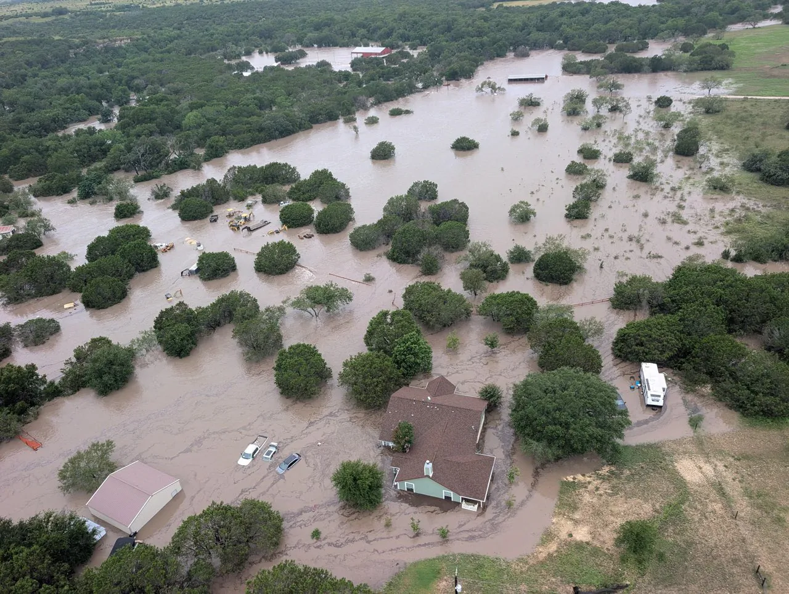
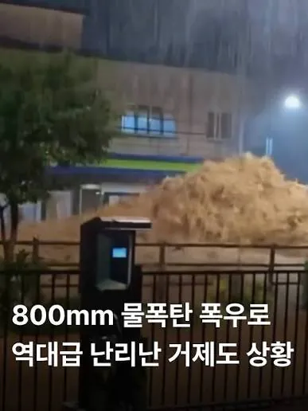
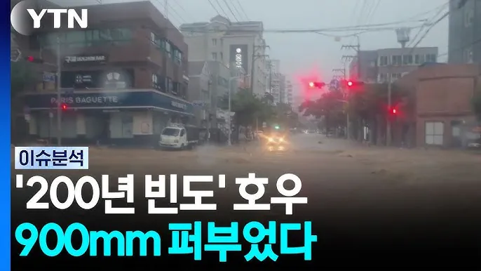
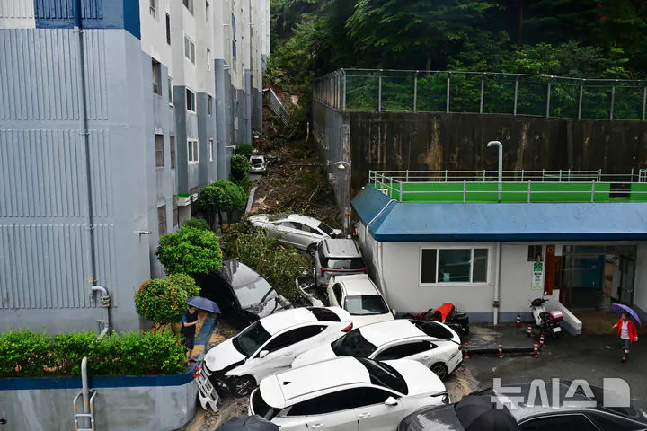
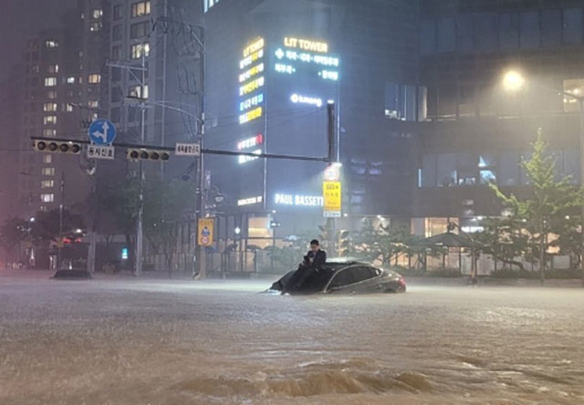

1999년 베네수엘라 바르가스의 비극
남미 역사상 최악의 홍수·산사태 참사 (사망자 약 1만~3만 명 추정)
강수량 : 3일간 누적 강수량 911mm


2024년 미국 텍사스 대홍수
텍사스주 90여 개 카운티 재난지역 선포 및 휴스턴 등 동남부 광범위 침수
강수량 : 일주일간 최대 누적 400~600mm 이상



2026년 대한민국 거제
거제 및 남해안 일대 대규모 침수·산사태 피해
강수량 : 2일간 누적 강수량 900mm 이상 (대한민국 관측 사상 역대 최대)
대참사급 강수량이 지금 실시간으로 일어나는 중
그나마 거제는 비가 많이 오는 지역이라 대비가 잘되어 있어서 이정도
+ 서울 강남역 폭우 떄

참고로 이때 강수량이 350~400mm 이었음 ㄷㄷ
댓글
수집 당시 댓글 16개
씨버러버 · 3 일 전
거제는 원래 비 많이오던 도시라서 도심에 있는 물을 바다로 빼는 펌프시설을 만들어 놨는데 이번에 그거 없었으면 더 큰일났을거라더라
듭다 · 3 일 전
바다로 나갈 물들이 바다수위가 높아져서 못 나가서 그럼 그래서 역으로 수문 닫아버리고 대형 배수펌프 깔아둔걸로 간조 때까지 수문위로 물 넘김
주관적인요정 · 4 일 전
거제라서 이정도 선방이지 강남이나 다른지역이었으면 진짜 최소 100명은 죽었을듯
너구비 · 4 일 전
사실 지구는 1.5도 오른순간 끝난거엿음...
창원시진해구이동거주중 · 3 일 전
섭종해요?
스미티워밴재거맨젠슨 · 3 일 전
이미 지구온난화 악순환은 시작됐다고 하더라 빙하 녹을수록 안에서 메탄나오고 그거때문에 겨울은 추워지고 여름은 더 더워진다고
너구비 · 3 일 전
그래서 지구 대기 해류 순환이 안되기시작해서 결국 한곳은 극심한 가뭄 한곳은 말도안돼는 폭우가 오는 곳으로 바뀌는거지....잘못걸리면 2일에 1000mm도 올듯
피코리타 · 3 일 전
이제 우리는 오래 살아봐야 80년 정도 더 살텐데 그 안에 섭종은 없을듯.
Aideln · 3 일 전
끝난건 인간뿐이긴함 ㅋㅋ 지금 이산화탄소 농도가 0.04정도인데 옛날에 1억년간 0.2를 찍은 때가 있다더라
마키마의반죽교실 · 3 일 전
거제 중심지가 해발이 좀 낮은데 거기가 피해가 컸지만 배수펌프장 설치해서 꽤 빨리 정리됐다고 함 그리고 강남도 마찬가지로 쑥 들어가는 지형임 옛날에는 강남에서 남편없이는 살아도 장화없이는 못산다는 말도 있었다고 함 비만 쳐오면 물에 잠겨가지고 근데 거제는 고현만으로 물을 쭉쭉 뺄 대책이 확실한데 강남은 서울한복판이라 배수설비를 마냥 크게 할 수도 없으니 그 기준 넘어가면 저리되는거지
불멸의러너 · 3 일 전
미쳤내 ㄹㅇ
만나서반갑습니다 · 3 일 전
진짜 말안되네
로보트 · 3 일 전
보통 운전할 때 앞이 안 보일 정도로 퍼붓는 게 30~50mm 라던데 800은 ㄷㄷ
shipsaekki · 3 일 전
지금도 때려붓는다. 미친것 같음.
이럴럴로럴 · 3 일 전
1미터 내렸다고하면 진짜 확 와닿는듯
블랑쉐 · 2 일 전
나 일부로 새벽에 나와서 비 맞아봤는데 눈이 안떠짐